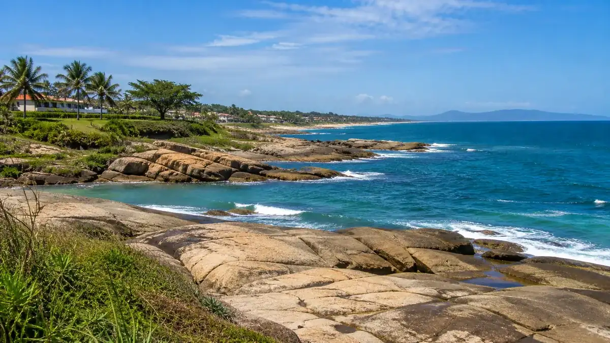

Sobre Rio das Ostras
Rio das Ostras é uma cidade localizada no litoral do estado do Rio de Janeiro, conhecida por suas belas praias, paisagens naturais e atividades relacionadas ao turismo.
A cidade oferece diversas opções de lazer, incluindo praias, áreas verdes, restaurantes e locais para apreciar o pôr do sol. É um destino que combina natureza, tranquilidade e vida litorânea.
Dados
País: Brasil
Estado: Rio de Janeiro
Região: Sudeste
Idioma: Português
Moeda: Real brasileiro
Clima
Temperatura: 28 °C
Condição: Parcialmente nublado
Vento: 12 km/h
Sensação térmica: Calculando...